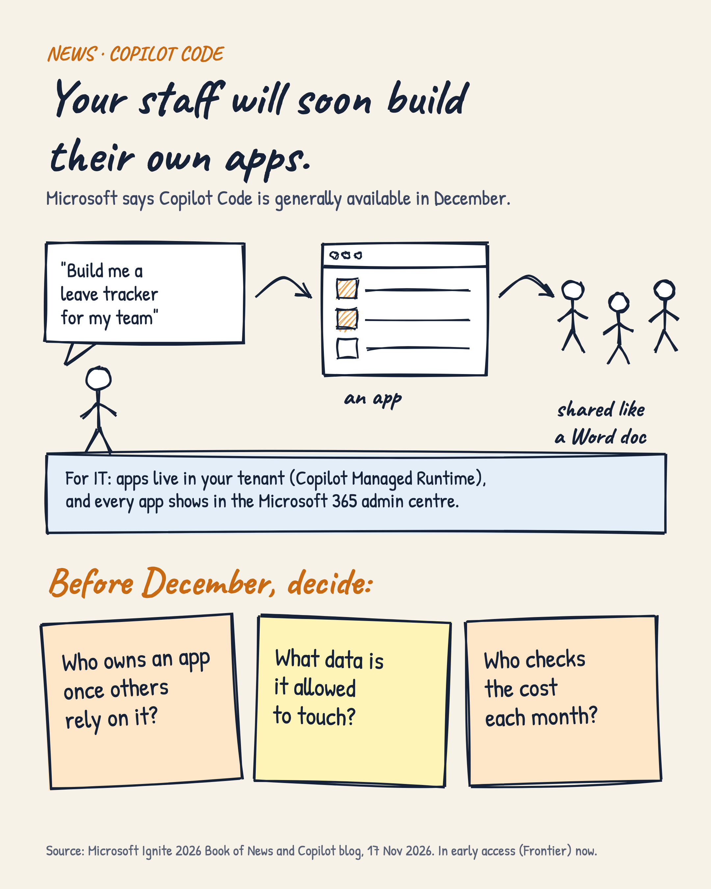

Your staff will soon build their own apps
Microsoft says Copilot Code will be generally available in December. Your staff will be able to build apps by describing them in plain words.
Microsoft's examples are dashboards, trackers and desktop widgets, shared the way you'd share a Word document. It uses the same agentic technology as GitHub Copilot, and it's in the Frontier early-access program now.
For IT, the apps are hosted in your own tenant on Copilot Managed Runtime, and every app shows up in the Microsoft 365 admin centre. Microsoft also lists Copilot Code among the usage-based AI services in Agent 365 Cost Management, so check how it will be billed before people start building.
My view: the tooling will be the easy part. Someone builds a handy tracker, ten people start relying on it, and then the builder changes jobs.
Before December, I'd settle three things:
Who owns an app once other people depend on it.
What data it's allowed to touch.
Who checks the cost each month.
Then I'd teach the first builders those rules along with the tool. If your organisation is in Frontier, have you tried it yet?
